5 PR4-Estadística Descriptiva.
Recuerda siempre cómo “piensa” R.

6 Estadística descriptiva con R.
En la sección anterior hemos visto como importar y gestionar variables de un dataframe. En esta práctica vamos a ver cómo obtener los descriptivos básicos. Es lo que se llama Análisis Exploratorio de los Datos (Exploratory Data Analysis [EDA])
Lo primero que debemos hacer es cargar los datos de iam que habíamos importado y modificado en la sesión anterior.
No indico ruta porque estoy en el directorio de trabajo y es donde está el archivo.
iam <- readRDS('iam.RDS')Si no fuese así, debería indicar la ruta entre las comillas. Por ejemplo, si estuviese en un subdirectorio del de trabajo, debería hacerlo así.
readRDS('_data/iam.RDS')Este código debería devolveros un error salvo que efectivamnte hayáis colocado el archivo en ese subdirectorio1
6.1 Descriptivo inicial y depuración.
Entre los objetivos del llamado Análisis Exploratorio de los Datos (EDA o Exploratory Data Analysis) destacaría tres:
- Obtener una visión general de la distribución de tus variables tanto mediante los descriptivos como los gráficos adecuados para el tipo de variable.
- Detectar valores anómalos por ser extremos (outliers), por no constar (missing) o por ser imposibles (error de medida o de introducción).
- Visualizar relaciones bivariadas (también hay técnicas multivariadas, pero no las veremos en esta introducción) entre las variables del dataframe.
- Una vez identificado todo lo anterior, podremos construir una primera foto de nuestra muestra.
Respecto a los valores anómalos, a veces podrán ser eliminados (errores de introducción), pero en otras ocasiones tendremos que lidiar con ellos en la construcción de los modelos y en la presentación de los resultados.
Aunque no es una regla exacta, se suele decir que no te puedes fiar de una variable que tenga más de un 10% de valores perdidos (missing), pero en ocasiones no te queda más remedio que utilizarlas. En estos casos hay diversas técnicas de imputación de valores perdidos que escapan a los objetivos de este curso.
Como habremos visto durante la clase, los descriptivos y gráficos adecuados dependen de la escala de medida de la variable a describir.
R tiene algunos criterios para decidir que devolver cuando le pedimos que haga un resumen (función summary), pero para ello necesita que la variable sea de la clase adecuada (numéric, integer, logical, factor)
Utilizaremos el dataframe iam. Recordemos su estructura.
str(iam)'data.frame': 100 obs. of 9 variables:
$ Id : int 1 2 3 4 5 6 7 8 9 10 ...
$ Age : num 65.2 62.5 64.7 65.4 70.7 ...
$ Sex : int 1 0 0 0 0 0 1 0 0 0 ...
$ Height: num 1.62 1.56 1.69 1.34 1.81 1.78 1.79 1.44 1.56 1.87 ...
$ Weight: num 74.6 60.9 74.2 43.9 80.9 ...
$ Smoke : int 0 0 0 0 1 0 0 1 0 0 ...
$ ami : int 0 0 0 0 0 0 0 1 0 0 ...
$ age5 : Factor w/ 2 levels "[55,65]","(65,75]": 2 1 1 2 2 2 2 1 1 2 ...
$ bmi : num 28.4 25 26 24.5 24.7 ...Como se puede apreciar, algunas variables que deberían ser categóricas están como tipo entero (int o integer), así que lo primero que vamos a hacer es convertirlas en factores.
iam$Sex<-factor(iam$Sex,labels=c('Men','Women'))Podríamos ir cambiando una a una, pero R cuenta con algunas funciones que permiten cambiar simultáneamente varias variables que se van a etiquetar de la misma manera. En nuestro caso son ami (Acute Myocardial Infarction) y Smoke (Fuma sí/no) que van con 0 (No) y 1 (Yes).
Es recomendable utilizar una estrategia homogénea de etiquetado de valores de variable para facilitar conversiones posteriores.La familia de funciones apply (apply, lapply, sapply, tapply, mapply…) no son demasiado intuitivas, y se han desarrollado funciones que permiten realizar los mismo ocn código más intuitivo. Aunque incluya aquí un ejemplo, no es esencial conocerlas para poder realizar este tipo de modificación.
iam[,c('ami','Smoke')]<-lapply(iam[,c('ami','Smoke')],factor,labels=c('No','Yes'))
str(iam)'data.frame': 100 obs. of 9 variables:
$ Id : int 1 2 3 4 5 6 7 8 9 10 ...
$ Age : num 65.2 62.5 64.7 65.4 70.7 ...
$ Sex : Factor w/ 2 levels "Men","Women": 2 1 1 1 1 1 2 1 1 1 ...
$ Height: num 1.62 1.56 1.69 1.34 1.81 1.78 1.79 1.44 1.56 1.87 ...
$ Weight: num 74.6 60.9 74.2 43.9 80.9 ...
$ Smoke : Factor w/ 2 levels "No","Yes": 1 1 1 1 2 1 1 2 1 1 ...
$ ami : Factor w/ 2 levels "No","Yes": 1 1 1 1 1 1 1 2 1 1 ...
$ age5 : Factor w/ 2 levels "[55,65]","(65,75]": 2 1 1 2 2 2 2 1 1 2 ...
$ bmi : num 28.4 25 26 24.5 24.7 ...Como podemos observar, en la nueva estructura (hemos modificado el dataframe) las variables que antes eran de tipo entero, ahora son factores.
Si ahora pedimos un primer resumen, observamos una serie de descriptivos básicos.
summary(iam) Id Age Sex Height Weight
Min. : 1.00 Min. :59.50 Men :58 Min. :1.150 Min. : 30.31
1st Qu.: 25.75 1st Qu.:63.73 Women:42 1st Qu.:1.580 1st Qu.: 64.77
Median : 50.50 Median :65.24 Median :1.705 Median : 77.36
Mean : 50.50 Mean :65.14 Mean :1.683 Mean : 74.62
3rd Qu.: 75.25 3rd Qu.:66.70 3rd Qu.:1.790 3rd Qu.: 82.59
Max. :100.00 Max. :70.71 Max. :1.960 Max. :121.87
Smoke ami age5 bmi
No :60 No :50 [55,65]:47 Min. :17.09
Yes:40 Yes:50 (65,75]:53 1st Qu.:24.25
Median :25.42
Mean :26.05
3rd Qu.:27.81
Max. :33.01 El paquete psych ofrece más posibilidades. Recuerde que si no lo tienen instalado debe instalarlo antes de llamar al paquete.
psych::describe(iam) vars n mean sd median trimmed mad min max range skew
Id 1 100 50.50 29.01 50.50 50.50 37.06 1.00 100.00 99.00 0.00
Age 2 100 65.14 2.09 65.24 65.15 2.23 59.50 70.71 11.21 -0.04
Sex* 3 100 1.42 0.50 1.00 1.40 0.00 1.00 2.00 1.00 0.32
Height 4 100 1.68 0.16 1.71 1.69 0.16 1.15 1.96 0.81 -0.72
Weight 5 100 74.62 16.79 77.36 74.86 12.53 30.31 121.87 91.56 -0.11
Smoke* 6 100 1.40 0.49 1.00 1.38 0.00 1.00 2.00 1.00 0.40
ami* 7 100 1.50 0.50 1.50 1.50 0.74 1.00 2.00 1.00 0.00
age5* 8 100 1.53 0.50 2.00 1.54 0.00 1.00 2.00 1.00 -0.12
bmi 9 100 26.05 3.14 25.42 25.86 2.02 17.09 33.01 15.93 0.35
kurtosis se
Id -1.24 2.90
Age -0.32 0.21
Sex* -1.92 0.05
Height 0.43 0.02
Weight 0.47 1.68
Smoke* -1.86 0.05
ami* -2.02 0.05
age5* -2.01 0.05
bmi 0.41 0.31Desgraciadamente, aunque identifica las variables categóricas, utiliza el valor numérico subyacente. Fíjese en la media de la variable Sex (1.42).
A no olvidar:
- Echar un vistazo al mínimo y máximo. Esto nos permite detectar valores imposibles (por ejemplo una edad de 130 años, o un peso de 999).
- Identificar si hay valores perdidos.
- Estadísticos que nos dan una primera visión sobre la distribución.
- Cercanía de la media a la mediana, desviación típica (recuerde que el coeficiente de variación es \(\frac{sd}{\overline{x}})\) expresado en %).
- Media recortada (trimmed, por defecto recorta el 10%) nos permite evaluar la influencia de los valores extremos.
- Asimetría (Skewness) y curtosis (Kurtosis) que nos permiten evaluar su parecido con una distribución normal, aunque solo con la estimación no es suficiente para llegar a una conclusión.
- MAD o Median Absolute Deviation, una medida robusta de la variabilidad que no es más que la mediana de los valores absolutos de distancias de cada valor a la mediana del conjunto. \(MAD=median([X_i-median{X}])\). b
- También aparece el error estándar (standard error o \(se(X)\)) que como veremos es importante en inferencia y que no se debe confundir con la desviación típica (standar deviation o \((sd)\)).
- No aparecen por defecto pero se pueden solicitar los cuartiles, en realidad los percentiles que deseemos. Recuerde que estas son medidas de posición, que también ayudan a describir nuestros datos.
psych::describe(iam,quant=c(.1,.25,.5,.75,.9)) vars n mean sd median trimmed mad min max range skew
Id 1 100 50.50 29.01 50.50 50.50 37.06 1.00 100.00 99.00 0.00
Age 2 100 65.14 2.09 65.24 65.15 2.23 59.50 70.71 11.21 -0.04
Sex* 3 100 1.42 0.50 1.00 1.40 0.00 1.00 2.00 1.00 0.32
Height 4 100 1.68 0.16 1.71 1.69 0.16 1.15 1.96 0.81 -0.72
Weight 5 100 74.62 16.79 77.36 74.86 12.53 30.31 121.87 91.56 -0.11
Smoke* 6 100 1.40 0.49 1.00 1.38 0.00 1.00 2.00 1.00 0.40
ami* 7 100 1.50 0.50 1.50 1.50 0.74 1.00 2.00 1.00 0.00
age5* 8 100 1.53 0.50 2.00 1.54 0.00 1.00 2.00 1.00 -0.12
bmi 9 100 26.05 3.14 25.42 25.86 2.02 17.09 33.01 15.93 0.35
kurtosis se Q0.1 Q0.25 Q0.5 Q0.75 Q0.9
Id -1.24 2.90 10.90 25.75 50.50 75.25 90.10
Age -0.32 0.21 62.53 63.73 65.24 66.70 68.12
Sex* -1.92 0.05 1.00 1.00 1.00 2.00 2.00
Height 0.43 0.02 1.47 1.58 1.71 1.79 1.86
Weight 0.47 1.68 53.96 64.77 77.36 82.59 93.47
Smoke* -1.86 0.05 1.00 1.00 1.00 2.00 2.00
ami* -2.02 0.05 1.00 1.00 1.50 2.00 2.00
age5* -2.01 0.05 1.00 1.00 2.00 2.00 2.00
bmi 0.41 0.31 23.20 24.25 25.42 27.81 31.30Con frecuencia necesitamos obtener los descriptivos en función de los grupos que establezca una variable categórica. Para ello podemos recurrir a la función by, en la que indicamos cotjunto de datos a describir (argumento en posición 1), índice o variable que establece los grupos (argumento en posición 2) y función que queremos aplicar a cada grupo establecido por la funcion índice sobre las variables incluidas en el objeto que contiene los datos iam.
No todas las funciones son aceptadas por by, pero psych::describe si lo es.
by(iam,iam$Sex,psych::describe)iam$Sex: Men
vars n mean sd median trimmed mad min max range skew
Id 1 58 49.64 30.61 48.50 49.50 40.03 2.00 100.00 98.00 0.05
Age 2 58 65.15 2.07 65.28 65.12 2.03 60.89 70.71 9.82 0.18
Sex* 3 58 1.00 0.00 1.00 1.00 0.00 1.00 1.00 0.00 NaN
Height 4 58 1.67 0.16 1.70 1.69 0.17 1.15 1.87 0.72 -1.07
Weight 5 58 70.31 12.45 75.19 71.70 10.51 30.31 84.79 54.48 -1.01
Smoke* 6 58 1.31 0.47 1.00 1.27 0.00 1.00 2.00 1.00 0.80
ami* 7 58 1.34 0.48 1.00 1.31 0.00 1.00 2.00 1.00 0.64
age5* 8 58 1.52 0.50 2.00 1.52 0.00 1.00 2.00 1.00 -0.07
bmi 9 58 24.96 1.10 24.68 24.94 1.16 22.92 27.88 4.97 0.32
kurtosis se
Id -1.36 4.02
Age -0.33 0.27
Sex* NaN 0.00
Height 1.07 0.02
Weight 0.55 1.63
Smoke* -1.38 0.06
ami* -1.62 0.06
age5* -2.03 0.07
bmi -0.56 0.14
------------------------------------------------------------
iam$Sex: Women
vars n mean sd median trimmed mad min max range skew
Id 1 42 51.69 26.97 53.50 51.74 31.88 1.00 99.00 98.00 -0.06
Age 2 42 65.13 2.14 65.19 65.19 2.36 59.50 68.63 9.13 -0.32
Sex* 3 42 2.00 0.00 2.00 2.00 0.00 2.00 2.00 0.00 NaN
Height 4 42 1.70 0.16 1.72 1.70 0.16 1.39 1.96 0.57 -0.27
Weight 5 42 80.58 20.06 80.74 81.40 16.12 36.92 121.87 84.95 -0.37
Smoke* 6 42 1.52 0.51 2.00 1.53 0.00 1.00 2.00 1.00 -0.09
ami* 7 42 1.71 0.46 2.00 1.76 0.00 1.00 2.00 1.00 -0.92
age5* 8 42 1.55 0.50 2.00 1.56 0.00 1.00 2.00 1.00 -0.18
bmi 9 42 27.55 4.26 28.54 27.91 4.68 17.09 33.01 15.93 -0.66
kurtosis se
Id -1.14 4.16
Age -0.44 0.33
Sex* NaN 0.00
Height -0.79 0.02
Weight -0.20 3.10
Smoke* -2.04 0.08
ami* -1.19 0.07
age5* -2.01 0.08
bmi -0.45 0.66Como se puede observar, la salida no está para ser publicada.
Como también habremos comentado en las clases de teoría, las variables categóricas ofrecen menos posibilidades descriptivas (contienen menos información) y su descripción univariada se va a reducir a dar las frecuencias absolutas y relativas.
La obtención de una tabla de contingencia es relativamente fácil.
table(iam$Sex,iam$Smoke)
No Yes
Men 40 18
Women 20 22Y la de las frecuencias relativas por (condicionadas a) fila o columna, también.
t1<-table(iam$Sex,iam$Smoke)
prop.table(t1,1) # 1 le indca que son los % sobre el total de fila, por eso suman 100%.
No Yes
Men 0.6896552 0.3103448
Women 0.4761905 0.5238095Los de la tabla anterior son las proporciones de fumadores en el grupo de mujeres (31%) y de hombres (52%).
Los de la siguiente son la proporción de hombres dentro de cada nivel de la variable fumador (sí/no).
Entre los no fumadores el 66.7% fueron hombres y el 33.3% fueron mujeres.
prop.table(t1,2) # 2 le indca que son los % sobre el total de fila, por eso suman 100%.
No Yes
Men 0.6666667 0.4500000
Women 0.3333333 0.5500000Existen funciones para ver los márgenes.
addmargins (table(iam$Sex,iam$Smoke))
No Yes Sum
Men 40 18 58
Women 20 22 42
Sum 60 40 100Ir variable a variable no es lo que necesitamos cuando queremos resumir muchas variables, por lo que algunos paquetes facilitan obtener esta información de varias variables a la vez.
tableone::CreateCatTable(data=iam,vars=c('Smoke','ami','age5'),strata = 'Sex',test = F) Stratified by Sex
Men Women
n 58 42
Smoke = Yes (%) 18 (31.0) 22 (52.4)
ami = Yes (%) 20 (34.5) 30 (71.4)
age5 = (65,75] (%) 30 (51.7) 23 (54.8) Incluso son capaces de distinguir el tipo de variable para utilizar el descriptor adecuado.
tableone::CreateTableOne (data=iam[,-1],strata = 'Sex',test = F) Stratified by Sex
Men Women
n 58 42
Age (mean (SD)) 65.15 (2.07) 65.13 (2.14)
Sex = Women (%) 0 ( 0.0) 42 (100.0)
Height (mean (SD)) 1.67 (0.16) 1.70 (0.16)
Weight (mean (SD)) 70.31 (12.45) 80.58 (20.06)
Smoke = Yes (%) 18 (31.0) 22 ( 52.4)
ami = Yes (%) 20 (34.5) 30 ( 71.4)
age5 = (65,75] (%) 30 (51.7) 23 ( 54.8)
bmi (mean (SD)) 24.96 (1.10) 27.55 (4.26) Algunos incluso devuelven información gráfica.
print(summarytools::dfSummary(iam[,-1],
plain.ascii = FALSE,
style = 'grid',
graph.magnif = 0.85,
varnumbers = FALSE,
valid.col = FALSE,
# tmp.img.dir = "/tmp"
),method = 'render')Data Frame Summary
iam
Dimensions: 100 x 8Duplicates: 0
| Variable | Stats / Values | Freqs (% of Valid) | Graph | Missing | ||||||||||
|---|---|---|---|---|---|---|---|---|---|---|---|---|---|---|
| Age [numeric] |
|
100 distinct values |  |
0 (0.0%) | ||||||||||
| Sex [factor] |
|
|
 |
0 (0.0%) | ||||||||||
| Height [numeric] |
|
38 distinct values |  |
0 (0.0%) | ||||||||||
| Weight [numeric] |
|
76 distinct values |  |
0 (0.0%) | ||||||||||
| Smoke [factor] |
|
|
 |
0 (0.0%) | ||||||||||
| ami [factor] |
|
|
 |
0 (0.0%) | ||||||||||
| age5 [factor] |
|
|
 |
0 (0.0%) | ||||||||||
| bmi [numeric] |
|
77 distinct values |  |
0 (0.0%) |
Generated by summarytools 1.1.4 (R version 4.4.1)
2025-09-07
En cualquier caso siguen siendo tablas que no están listas para ser publicadas.
Si dio tiempo, en la última clase deberíamos haber visto una tabla construida como “publication-ready tables”.
Aquí incluyo un ejemplo, con los datos utilizados en esta sesión.
| Table 1. Descriptive statistics of the sample by Sex | ||
| Characteristic | Men N = 581 |
Women N = 421 |
|---|---|---|
| Age | 65.28 (63.74, 66.54) | 65.19 (63.72, 66.78) |
| Height | 1.70 (1.57, 1.79) | 1.72 (1.58, 1.79) |
| Weight | 75 (61, 81) | 81 (73, 93) |
| Smoke | 18 (31%) | 22 (52%) |
| AMI | 20 (34%) | 30 (71%) |
| Age group | ||
| [55,65] | 28 (48%) | 19 (45%) |
| (65,75] | 30 (52%) | 23 (55%) |
| BMI | 24.68 (24.20, 25.79) | 28.54 (24.48, 31.30) |
| 1 Median (Q1, Q3); n (%) | ||
6.1.1 Gráficos simples.
Incluyo aquí algunos gráficos elaborados con las opciones gráficas en lo que he denominado base R. No serán los que utilizaremos para publicar, pero son perfectamente correctos.
6.1.1.1 Gráficos. Variables categóricas.
6.1.1.1.1 Gráficos de columnas.
Curiosamente es uno de los gráficos más sencillos y sin embargo en base R su personalización es laboriosa, entre otras cosas porque necesita construir previamente una tabla.
t2<-100*prop.table(table(iam$Smoke,iam$Sex),2)
p<-barplot(t2,beside=T,col=c('cadetblue','red'),
ylim=c(0,100),
ylab='%',
xlab='Sex')
text(x = c('uno','dos'))Warning in xy.coords(x, y, recycle = TRUE, setLab = FALSE): NAs introducidos
por coerción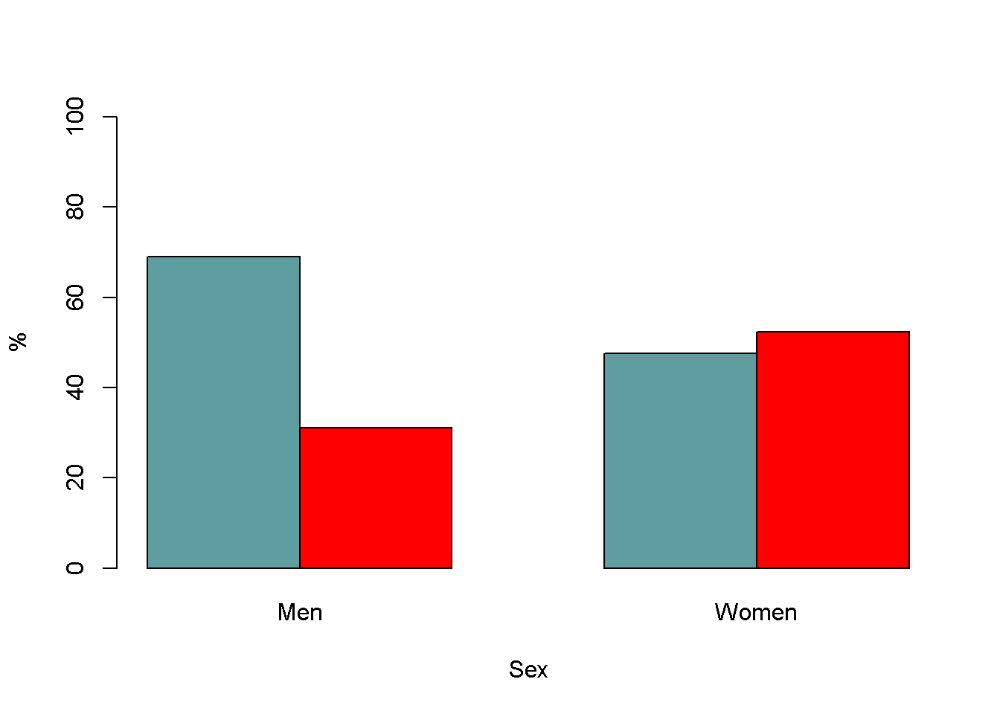
6.1.1.2 Gráficos. Variables continuas.
Algo similar va a ocurrir con respecto a las posibilidades gráficas en la descripción univariada.
Desarrollamos aquí los gráficos vistos durante las clases.
6.1.1.2.1 Histograma
hist(iam$Age) # las opciones ayudan a mejorar la presentación. 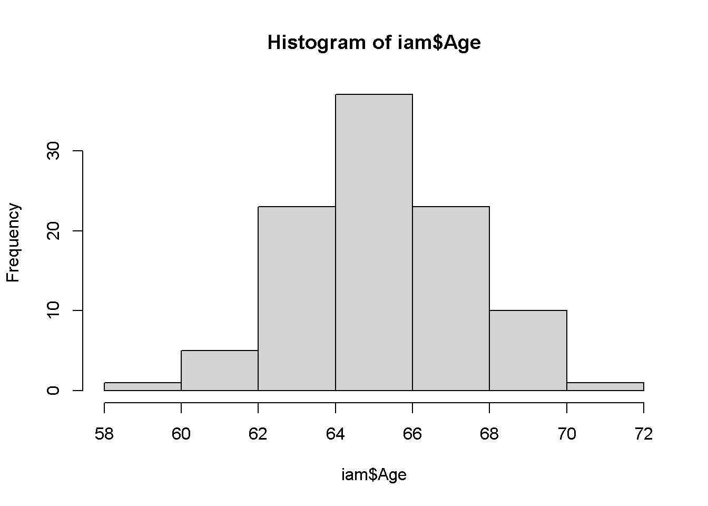
hist(iam$Age,freq=F,col="blue",xlab="Edad") #prob=T es lo mismo que freq=F
lines(density(iam$Age)) # para que dibuje la función de densidad. Necesita prob=T (*)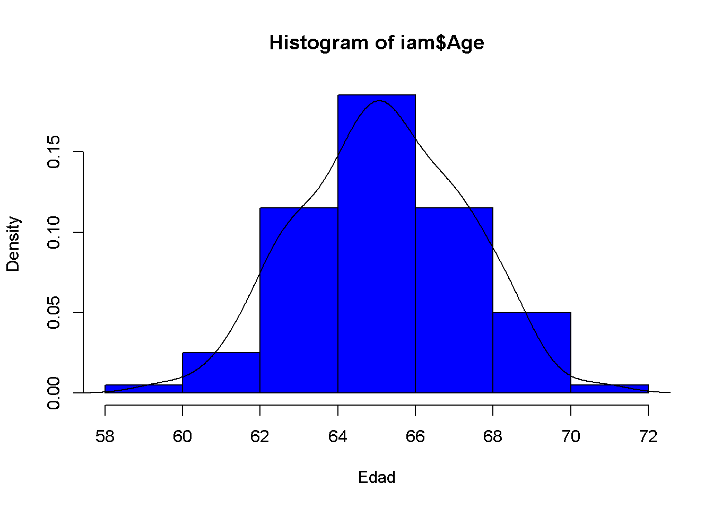
Se puede sofisticar algo más.
Esta representación fusiona los dos histogramas y juega con la transparencia para comparar su distribuciones.
hist(iam$Age[iam$Sex=="Men"],freq=F,col=rgb(1,0,0,1/5),xlab='Age',main='Histogram of Age by Sex')
hist(iam$Age[iam$Sex=="Women"],freq=F,col=rgb(0,0,1,1/5),add=T,xlab='Age')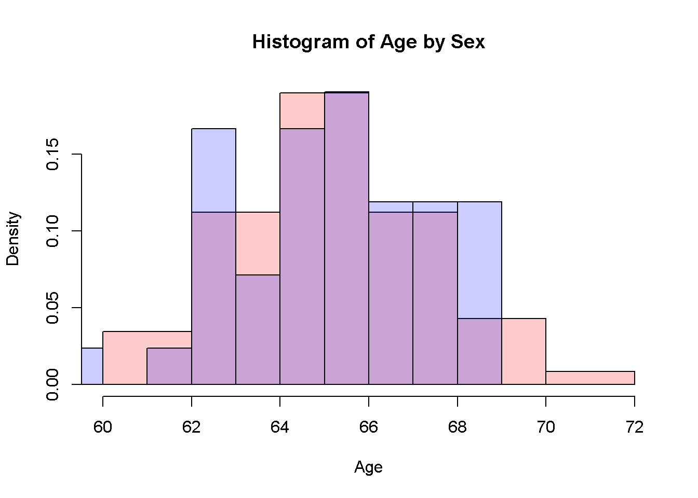
#Es necesario usar freq=T porque si saca las absolutas el grupo más grande destacará sobre el grupo más pequeño.6.1.1.2.2 Boxplot
6.1.1.2.2.1 Una variable.
boxplot(iam$Age)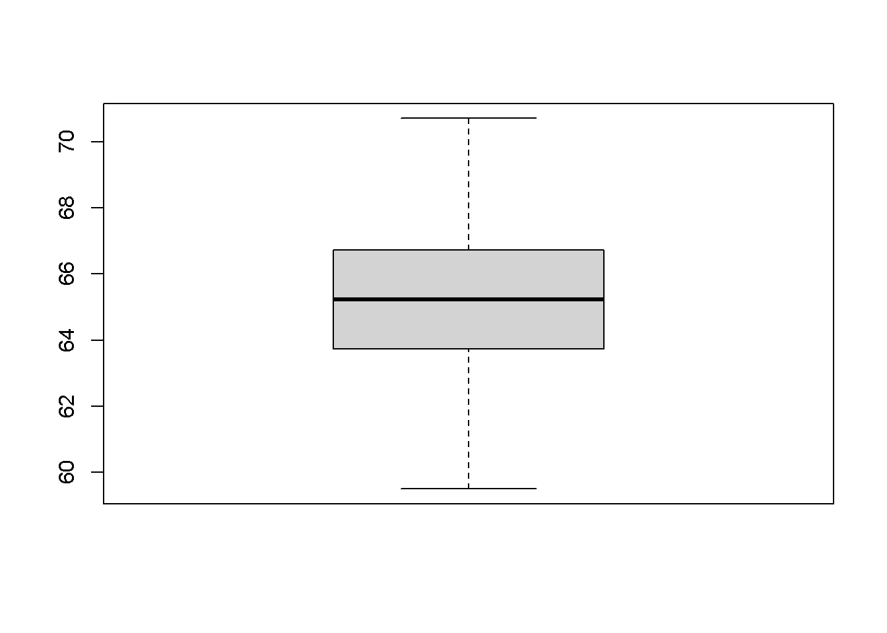
boxplot(iam$Age,col="red")
text(1.25,median(iam$Age),round(median(iam$Age),2)) # función gráfica de bajo nivel.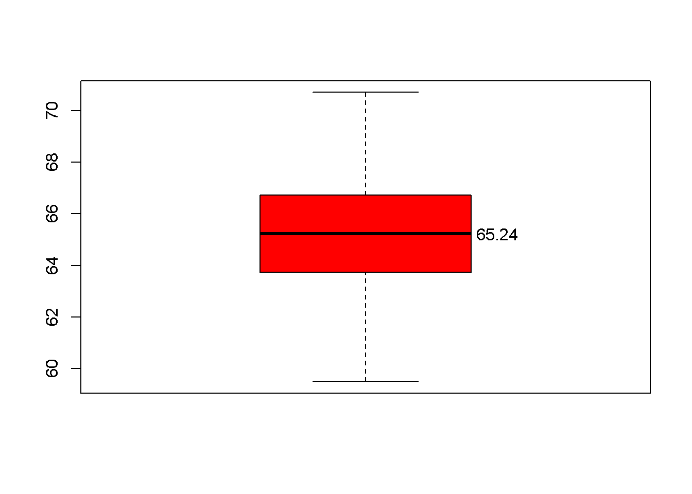
6.1.1.2.2.2 Por grupos de otra variable categórica.
Incluimos algunas ociones de configuración.
Las etiquetas salen porque las hemos deficido en el factor, de otra forma saldrían los valores (0,1)
boxplot(formula=Age~Sex,data=iam,
col=c('orange','purple')
)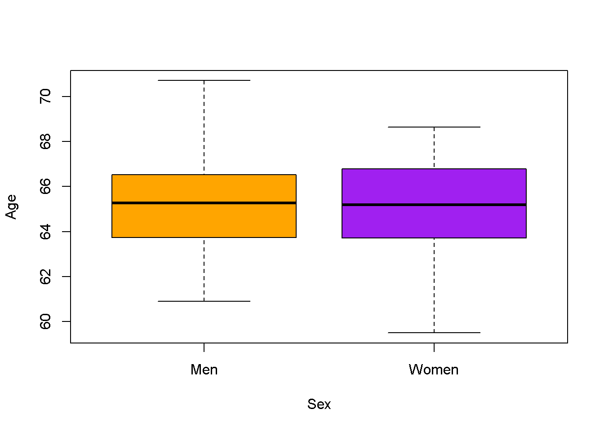
6.1.1.2.3 Stem&Leaf
Lo incluyo por cuestiones históricas y porque realmente aporta información que el histograma no, pero es raro ya ver este gráfico.
stem(iam$Age)
The decimal point is at the |
58 | 5
60 | 92579
62 | 1235567788890114557799
64 | 0112334455577788890112233344445555799
66 | 002334456788802222233455
68 | 1122344662
70 | 76.1.1.2.4 Gráfico Q-Q.
Gráfica cuantil-cuantil frente a distribución normal.
Este gráfico es muy útil y sirve para analizar visualmente si una distribución empírica (nuestros datos observados) sigue razonablemente bien una distribución normal2. Cuando la sigue, los puntos se distribuyen cerca de la línea.
Para ello enfrentan los datos observados frente a los cuantiles que ocuparían en una distribución, en este caso normal.
Las coordenadas en cada eje para cada punto se construyen de la siguiente manera3.
En el eje de ordenadas (eje y) representa la posición que ocupan los valores observados expresada en cuantiles desde el centro de la distribución empírica. En el eje de abscisas (eje x) se representa la posición que ocuparían dichos valores en una distribución teórica normal perfecta con la misma media y desviación típica que la distribución empírica.
Si la distancia (expresada en cuantiles) a la que está un punto observado en la distribución empírica coincidiese perfectamente con la distancia (expresada en cuantiles) a la que estaría ese mismo punto en una distribución normal perfecta con la misma media y desviación típica que la de la distribución empírica, todos los puntos se colocarían en la diagonal diagonal. Si se apartan, es que los puntos no están donde se les espera, informando de asimetrías en las colas, distribuciones bimodales, existencia de valores atípicos…
Hace falta cierta experiencia para interpretar los detalles finos, pero es un gráfico bastante intuitivo para identificar problemas con la normalidad de la variable incluso al ojo menos experimentado.
qqnorm #(Gráfico cuantil-cuantil de distribución de variable problema frente a distribución normal con misma media y desviación típica que la de la variable problema).function (y, ...)
UseMethod("qqnorm")
<bytecode: 0x0000022c0e564a70>
<environment: namespace:stats>qqnorm(iam$Age)
qqline(iam$Age)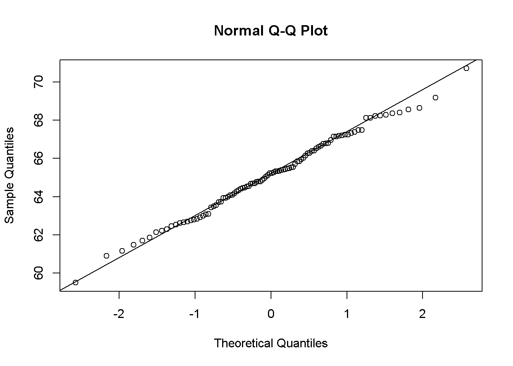
6.1.2 Gráfico de dispersión o scatter plot.
En este representamos la relación bivariada entre dos variables cuantitativas, preferentemente continuas.
plot(iam$Age,iam$bmi,main='Scatter plot BMI by Age',
xlab='Age [yrs.]',
ylab=expression(paste('Body Mass Index [',Kg/m^2,']')) #Es posible insertar fórmulas, aunque no siempre es fácil.
)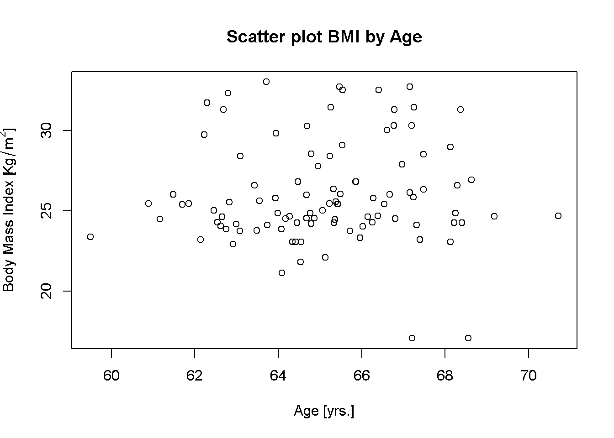
Si tuviésemos que ir una a una, supondría mucho trabajo. Existen funciones que nos pueden devolver múltiples tipos de relación simultáneamente.
pairs(iam[,c('Age','Height','Weight','bmi')])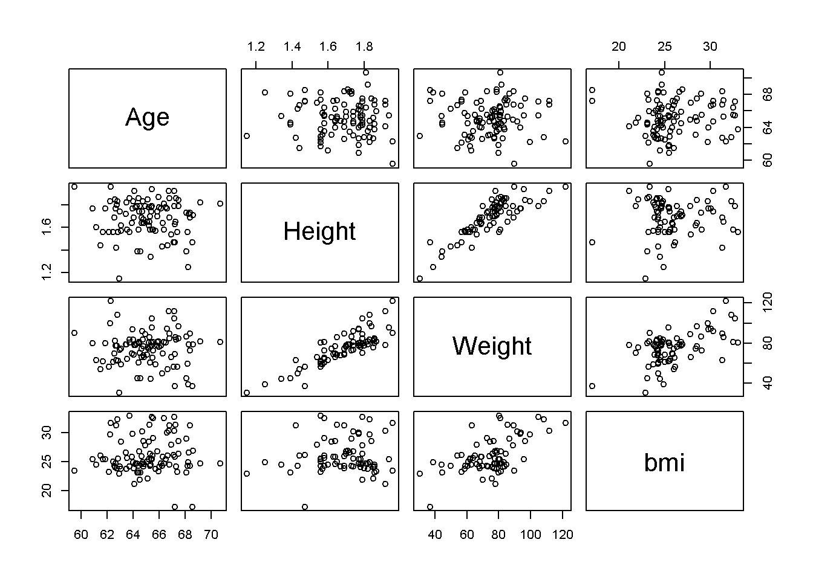
Como pasaba con las tablas, estos gráficos no son aún ‘Publication-ready Graphs’. Dado que este tipo de gráficos no son necesarios para superar el bloque, si da tiempo hablaremos de cómo crearlos en la última sesión.
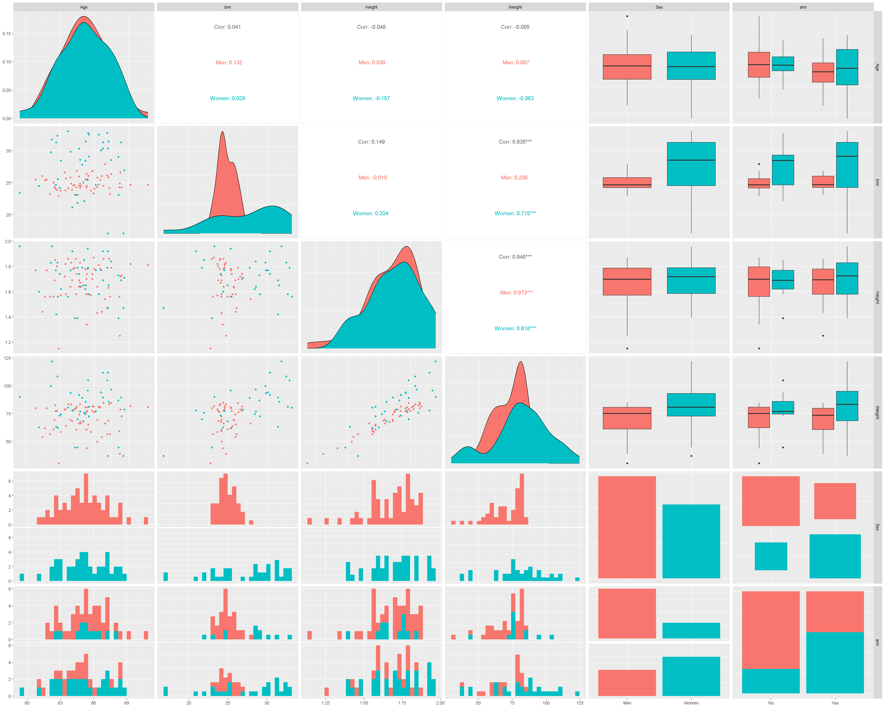
Recordad que siempre es mejor utilizar direccionamiento relativo (/_data/iam.RDS) en vez de absoluto (‘C:/Users/Usuario/Documents/SUB1/SUB2/SUB3/SUB4/SUB5/SUB6/dataiam.RDS’) - atención a la dirección de la barra si copiasteis el path desde Windows↩︎
En realidad se puede comparar con otras distribuciones teóricas, pero la que nos interesa aquí es la distribución normal↩︎
Si no recuerdo mal, SPSS representa este gráfico invirtiendo los ejes, pero la interpretación es muy similar.↩︎